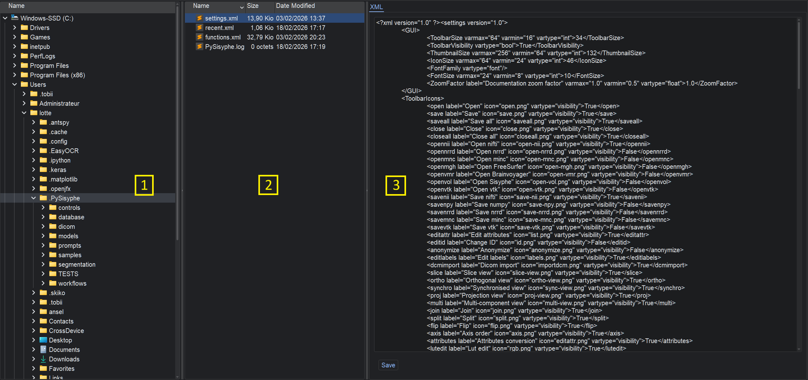

File browser

PySisyphe provides a file manager similar to Windows File Explorer from the File Browser tab in the central area.
This widget consists of three parts: folders area on the left (1), files area in the middle (2), and a preview area on the right (3).
The folder area displays a directory tree.
Left-click on the icon folder to select it. You can only select one directory. This folder is then expanded to view its subdirectories. The files located in this directory are displayed in the files middle area.
Right-click to pop up a menu:
Paste, paste the file(s) or folder that was copied to the clipboard into the current folder (i.e. selected folder).
Copy folder, copy the current folder (i.e. selected folder) to the clipboard.
Cut folder, cut the current folder (i.e. selected folder) to the clipboard.
Rename, rename the current folder. A single click on a folder item also triggers the editing.
New folder, create a new folder into the current folder (i.e. selected folder).
Remove folder, remove the current folder (i.e. selected folder).
Open current folder in file explorer/finder, open the current folder, which is selected in the directory tree, in the File Explorer on the Windows platform or the Finder on the Mac OS platform.
Go to user folder, select the user folder (~/.PySisyphe) and scroll to it in the directory tree.
Go to template folder, select the PySisyphe template folder and scroll to it in the directory tree.
The folder area supports drag-and-drop from the folder and file area, as well as from the File Explorer on the Windows platform and the Finder on the Mac OS platform.
The files area displays a list of files of the current folder, selected in the folder area.
Left-click on the icon file to select it and display a preview of its contents in the area on the right. You can select multiple files.
Double-click a file to open it in the Thumbnail bar. The following files are supported: .xvol PySisyphe volume, Nifti volume (.nii, .hdr, .img, .nia, .nii.gz, .img.gz), Nrrd volume (.nrrd, .nhdr), Minc volume (.mnc, .minc), FreeSurfer volume (.mgh, .mgz), .vol Sisyphe volume, VTK volume (.vtk, .vti). Files with the .xlabels extension open in the Edit volume labels dialog box. Files with the .xmodel extension open in the General linear model definition dialog box. Files with the .xwflow extension open in the Workflow processing dialog box.
Right-click to pop up a menu:
Open, similar to double-click (see above).
Edit attributes, open the selected PySisyphe volume in the Edit attributes dialog box.
Copy to console, copy the selected PySisyphe volume to the IPython console as the variable “v”.
AC-PC selection, AC-PC selection of the selected PySisyphe volume.
Frame detection, Stereotactic frame detection of the selected PySisyphe volume.
Reorient, Volume reorientation of the selected PySisyphe volume.
Rename file, rename the selected file.
Remove, remove the selected file. A single click on a file item also triggers the editing.
Copy file, copy the selected file(s) to the clipboard.
Cut file, cut the selected file(s) to the clipboard.
Paste, paste the file(s) or folder that was copied to the clipboard into the current folder (i.e. selected folder).
Select all, select all the files of the current folder.
New folder, create a new folder into the current folder.
Open current folder in file explorer/finder, open the current folder, which is selected in the directory tree, in the File Explorer on the Windows platform or the Finder on the Mac OS platform.
The files area supports drag-and-drop from the folder and file area, as well as from the File Explorer on the Windows platform and the Finder on the Mac OS platform.
The preview area displays a preview of the selected file’s contents. Four types of previews are available depending on the file type: text, table, image, or XML source.
The text preview is not editable. The text can, however, be selected. Right-click in the text area to pop up a menu that will allow you to either Copy the selected text or Select all of the text. Left-click the XML source checkbox to provide XML source preview of the supported files (see below). Several buttons are provided in the text preview:
Save, save the current text to a text file.
Table import, try parsing the current text to extract a table. Select the character that is used as a separator between the columns of data to be extracted (space ascii 32, tab ascii 9, “,”, “;” or “|”). The result is displayed in the table preview.
To select a column in the table preview, left-click on a cell. Double-click on a cell to edit it. Several buttons are provided in the table preview:
Transpose, swap table rows and columns.
Save, save the current table in various formats (.csv, .json, .html, numpy array .npy, Excel .xlsx).
Save selected, save the selected column in numpy array format (.npy).
Table to console, copy the current table to the IPython console as variable “df”.
Copy column to console, copy the selected column to the IPython console as variable “vcol#x” (x as column number).
Several buttons are provided in the image preview:
Zoom in, apply a zoom-in factor of ten percent.
Zoom out, apply a zoom-out factor of ten percent.
1:1, reset zoom to display the full image in the area.
Save, save the current image in various formats (.bmp, .jpg, .png, .tga, .tiff, or .webp).
OCR, perform an optical character recognition of the current image, the detected text is displayed in the text preview.
There is a Save button in the XML source preview that allows you to save the current file. Note that this XML preview is editable, and you can select the text. Right-click in the text area to pop up a menu that will allow you to either Copy/Cut/Delete the selected text, Paste the clipboard text at the current cursor position, Select all of the text, Undo/Redo previous actions. Edit with caution because no copy of the original file is kept; it is overwritten when saving.
The following formats are supported for previewing:
Volume files:
.xvol: PySisyphe volume, textual preview of the SisypheVolume instance attributes +/- XML source preview
.nii, .hdr, .img, .nia, .nii.gz, .img.gz: Nifti volume, textual preview of the SimpleITK instance attributes
.nrrd, .nhdr: Nrrd volume, textual preview of the SimpleITK instance attributes
.mnc, .minc: Minc volume, textual preview of the SimpleITK instance attributes
.mgh, mgz: FreeSurfer volume, textual preview of the SimpleITK instance attributes
.vmr: BrainVoyager volume, SisypheVolume instance, textual preview of the SimpleITK instance attributes
.vol: Sisyphe volume, SisypheVolume instance, textual preview of the volume instance attributes
.vtk, .vti: VTK volume, SisypheVolume instance, textual preview of the SimpleITK instance attributes
.dcm, .dicom, .ima, .nema: DICOM image, textual preview of the PyDicom Dataset instance attributes, image preview of the slice
Volume attributes files:
.xacpc: PySisyphe AC-PC attributes, textual preview of the SisypheACPC instance attributes +/- XML source preview
.xacq: PySisyphe acquisition attributes, textual preview of the SisypheAcquisition instance attributes +/- XML source preview
.xdcm: PySisyphe XML Dicom, textual preview of the XmlDicom instance attributes +/- XML source preview
.xdisplay: PySisyphe display attributes, textual preview of the SisypheDisplay instance attributes +/- XML source preview
.xfid: PySisyphe stereotactic frame markers, textual preview of the SisypheFiducialBox instance attributes +/- XML source preview
.xidentity: PySisyphe identity attributes, textual preview of the SisypheIdentity instance attributes +/- XML source preview
ROI file:
.xroi: PySisyphe ROI, textual preview of the SisypheROI instance attributes +/- XML source preview
LUT file:
.xlut: PySisyphe LUT, textual preview attributes of the SisypheLut instance +/- XML source preview
Geometric transformation files:
.xtrf: PySisyphe geometric transformation, textual preview attributes of the SisypheTransform instance +/- XML source preview
.xtrfs: collection of PySisyphe geometric transformations, textual preview attributes of the SisypheTransformCollection instance +/- XML source preview
.xfm: XFM geometric transformation, textual preview attributes of the SisypheTransform instance
.tfm: TFM geometric transformation, textual preview attributes of the SisypheTransform instance
.trf: BrainVoyager geometric transformation, textual preview attributes of the SisypheTransform instance
Mesh file:
.xmesh: PySisyphe Mesh, textual preview attributes of the SisypheMesh instance +/- XML source preview
Tools files:
.xtools: collection of PySisyphe tools, textual preview attributes of the ToolWidgetCollection instance +/- XML source preview
.xline: PySisyphe trajectory tool, textual preview attributes of the LineWidget instance +/- XML source preview
.xpoint: PySisyphe target tool, textual preview attributes of the HandleWidget instance +/- XML source preview
Tracking file:
.xtract: PySisyphe Streamlines, textual preview attributes of the SisypheStreamlines instance +/- XML source preview
Other files:
.xlabels: PySisyphe labels, textual XML preview
.xmodel: PySisyphe statistical model, textual XML preview
.xwflow: PySisyphe workflow, textual XML preview
Data files:
.csv: CSV table format, table preview
.dta: Stata table format, table preview
.npy, .npz: Numpy vector/array format, table preview
.json: JSON format, textual preview
.sas7bdat: SAS table format, table preview
.sav: SPSS table format, table preview
.xlsx: Excel table format,table preview
.xml: XML format, textual preview
.xsheet: PySisyphe table format, table preview
Bitmap files (.bmp, .eps, .jpg, .jpeg, .pcx, .pfm, .png, .pbm, .pgm, .ppm, .pnm, .tga, .tiff, .webp, .xbm, .xpm), image preview (textual preview after OCR)
Document files:
.pdf: PDF format, image preview & textual preview of string fields
.txt, .json, .log, .md, .rst: textual preview